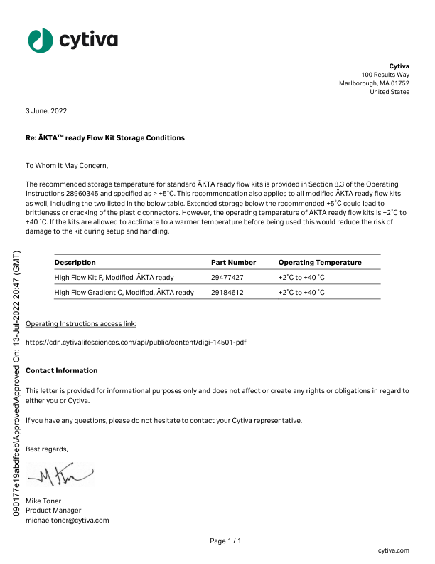

Finally, let's explore PyMuPDF, the most versatile library on our list. Not only can it extract text, but it also gives us bounding boxes (the coordinates of text on the page). Watch the video below to see it in action.
{{VIDEO}}The video writes import fitz. fitz is PyMuPDF's old name. Newer versions still accept it only so old code keeps working.
Your notebook's cell already says import pymupdf, so run it as it is. If you type the code yourself, write pymupdf wherever the video writes fitz, as in pymupdf.open.
The video uses a different sample PDF from ours, so its output won't match yours.
Go to your copy of the notebook. Find the cell that starts with import pymupdf, or paste this into a new code cell, and press Run:
doc.metadata is the file's metadata: facts about the file itself, such as its title and author.
You'll see this under the cell:
{{CODE:plain:Output:PDF Metadata: {'format': 'PDF 1.7', 'title': '', 'author': '', 'subject': '', 'keywords': '', 'creator': '', 'producer': '', 'creationDate': '', 'modDate': '', 'trapped': '', 'encryption': None} Total pages: 3}}Every field after format is blank ('' or None), because this file doesn't fill them in.
Next, run the cell that starts with # Extract text from the first page:
You'll see the letter on page 1. Here's part of it:
{{CODE:plain:Output (trimmed):Cytiva ... To Whom It May Concern, ...}}Keep your output on screen, because you'll search it in the task at the end.
Now run the cell that starts with text_data = page.get_text("dict"):
This is what makes PyMuPDF special: you can get the exact position of each text element on the page. This helps AI models understand document structure.
Inside the dictionary, the text is sorted into blocks (chunks of text), lines, and spans (pieces of a line in the same font). The cell prints each span with its bounding box.
Here are two of the rows the cell prints:
{{CODE:plain:Output (trimmed):Text: Cytiva, Bounding Box: (547.4367065429688, 87.58555603027344, 576.0117797851562, 98.43190002441406) ... Text: Page 1 / 1, Bounding Box: (295.2022399902344, 754.135986328125, 339.68255615234375, 765.7059326171875) ...}}You can also render PDF pages as images for visual inspection or further processing. To render a page means to draw it as a picture, so you can see it the way a person would.
Find the cell that starts with # Render the first page as an image, or paste this into a new code cell, and press Run:
page.get_pixmap() draws the page as a picture made of tiny coloured dots, called a pixmap, and pix.save() saves it as page1.png.
You'll see this under the cell:
{{CODE:plain:Output:Page saved as page1.png}}Now open the picture you just saved, right inside Colab:
page1.png in the list. If it isn't there yet, click the Refresh button at the top of the panel.page1.png. Colab opens the picture in a panel on the right.
Fun task: Try opening the saved image and comparing it with the text and bounding boxes you extracted. How well does the bounding box match the actual text?
The picture is 612 by 792 dots, the same size as the page in points, so a box's numbers are also dot positions in the picture.
Look through your page 1 output from Step 2. Find the date at the top of the letter.
{{REVEAL:ans:Show the Answer}}Here's the line, exactly as PyMuPDF prints it:
{{CODE:plain:Output:3 June, 2022}}PyMuPDF keeps the space after the comma, while pdfplumber in Part 2 drops it.
{{/REVEAL}}Done looks like: you found the date at the top of the letter in your own page 1 output, and it matches the answer, space after the comma included.